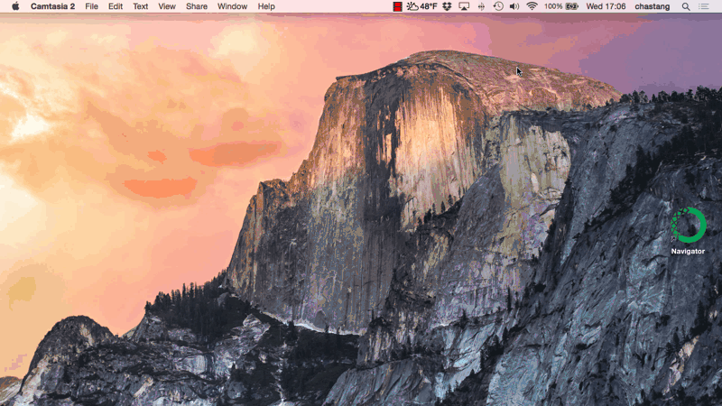

How to Start and Run a Jupyter Notebook
As discussed in the introduction, Jupyter notebooks provide a tremendous advantage for scientific computing, analysis and visualization. Here, we will explain how to start a Jupyter notebook. We will present just enough information to get you started. For a more complete treatment of Jupyter notebook software, please read the official documentation.
In the previous section, we explained how to download and install a complete Python installation with Anaconda for both Mac OS X and Windows. Armed with this experience, we will demonstrate how to start a Jupyter notebook in order to run code.
The Jupyter Notebook software is included in the Python installation we obtained from Anaconda. There are at least two scenarios in which you may want to run a Jupyter notebook:
- You aim to further experiment with, or augment, an existing Jupyter notebook like the ones that already exist within a repository in github.
- You want to develop a Jupyter notebook or series of notebooks for uses such as supplementing teaching material, or for a scholarly journal article, for example.
In both cases, you will want to start the Jupyter notebook in a specific folder.
Starting a Jupyter Notebook in a Specific Folder
On Mac OS X, create a Desktop folder with the Finder called my-notebook. In the last section, we learned how to start the OS X Terminal. Launch the Terminal again so that we may start Jupyter. Change to that directory (i.e., open the newly created my-notebook folder) with the cd command: cd ~/Desktop/my-notebook. The ~ character is a shortcut to indicate you are at your home directory.
On Windows, create a Desktop folder called my-notebook. Hold down the shift key and right-click on the newly created folder. A context menu will appear and there will be an option to, "Open command window here". Click this option to launch the Windows Command Prompt at that specific location.
We can now start our Jupyter notebook with this command:
jupyter notebook
Once entered, this command will automatically launch your default web browser with a new notebook in an empty directory.
To actually create a notebook, go to the New, Python 3 menu item.
Enter some code in the first cell:
print("hello world")
and press Shift-Enter to actually run the cell yielding
hello world

For more information on the basics of using the Jupyter Notebook, we recommend starting with this notebook on Notebook Basics.
How to Run OPT Jupyter Notebooks
This project includes a series of Jupyter notebooks for learning Python with geoscience objectives. They are located in the notebooks folder in the git master branch. In order to clone this project or any projects containing Jupyter notebooks such as the Unidata Python Workshop, please see the section on git and github. Once you have cloned your repository, change directory to where the Jupyter notebooks are located in the repository folder (e.g., the notebooks directory) and start Jupyter with the jupyter notebook command.
MyBinder and Starting your Jupyter Notebook in the Cloud
MyBinder is a third option that runs Jupyter notebooks on a cloud server that is setup on your behalf. If the project has enabled MyBinder, you will see a  badge on the github project page. MyBinder is available for the Unidata Python Workshop Jupyter notebooks at this link. See the MyBinder website for more information.
badge on the github project page. MyBinder is available for the Unidata Python Workshop Jupyter notebooks at this link. See the MyBinder website for more information.